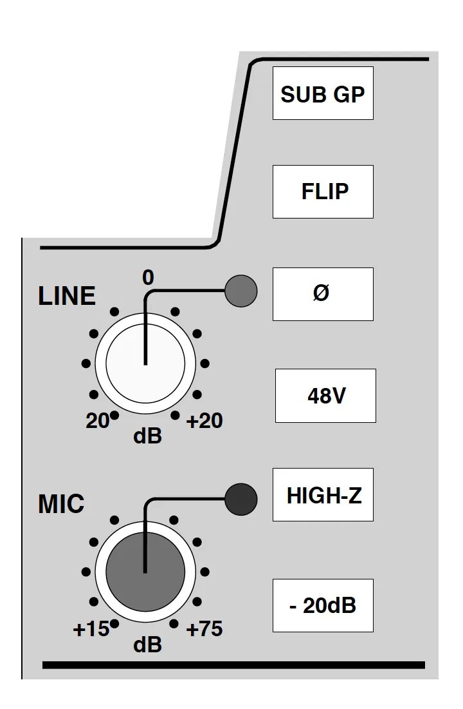
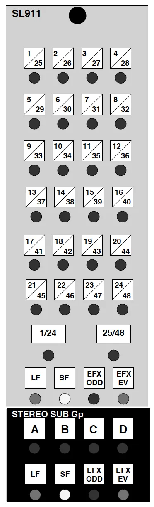
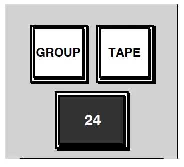
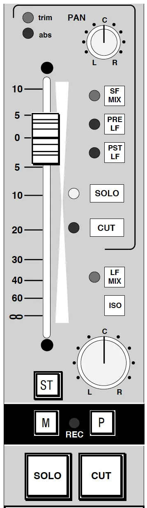
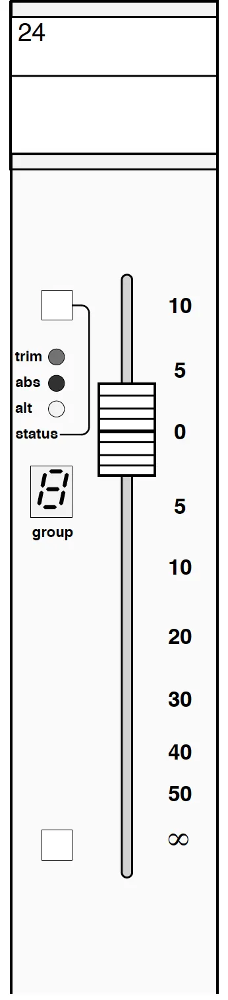
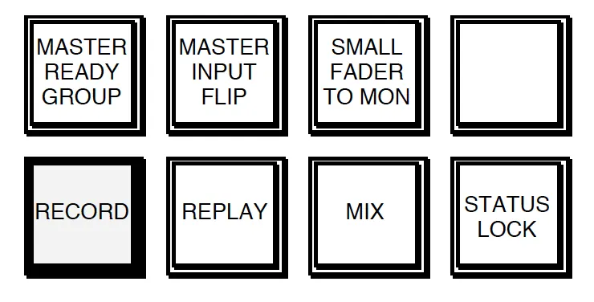
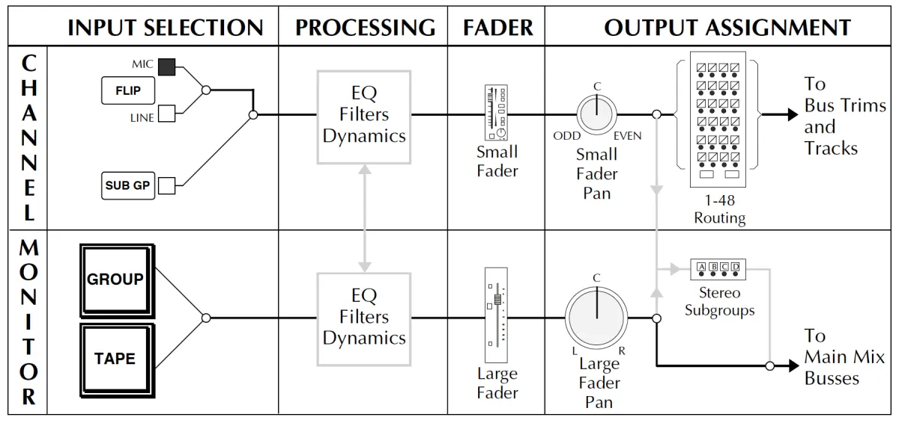
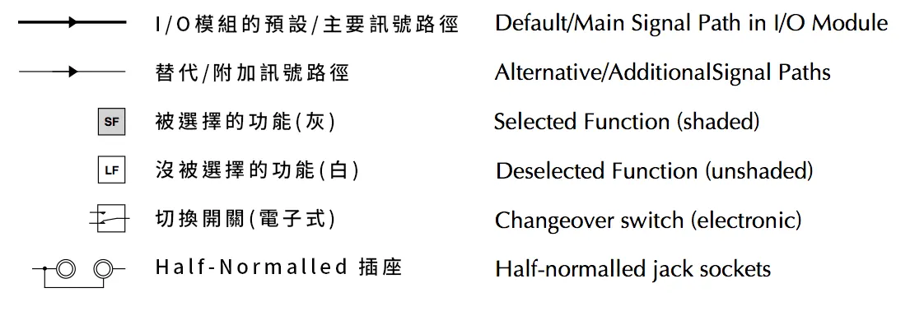
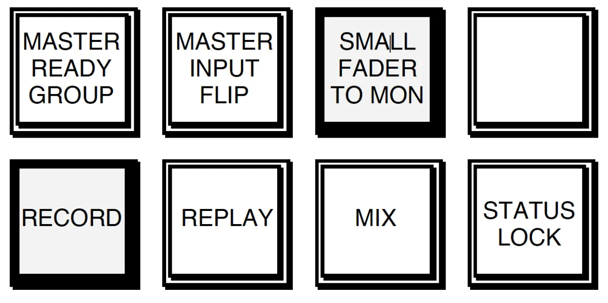
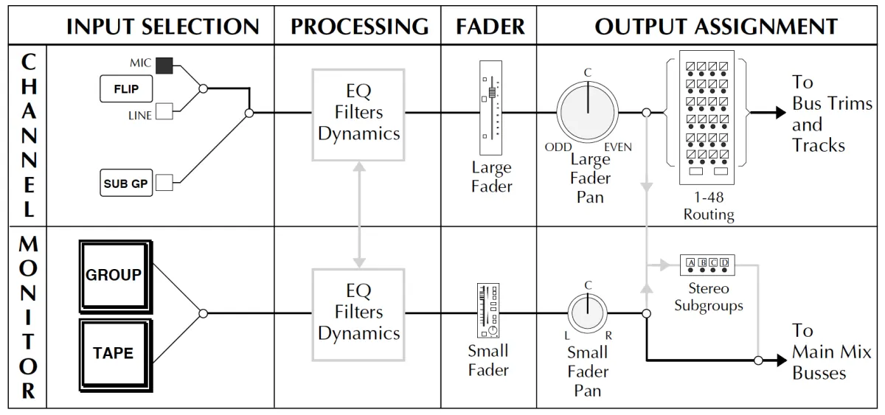

Basic Routing and Signal Flow 基本路由與訊號流
了解控台的訊號流，或許先藉由了解Status來開始是個最好的方法，Status在主控區內，這些按鈕定義了SL911J I/O模組的基礎訊號流，所以他是非常重要的。

SL9000J預設有
- Record,
- Replay,
- Mix,
- Record + Mix (Overdub)
以上四種模式，而Small Fader to Mon(itor)和Master Input Flip 也會影響到I/O模組的訊號流。
每個模組的底下都會有兩條完全獨立的聲音訊號路徑，分別為 Channel Path通道路徑和Monitor Path監聽路徑。
The Six Key Points in the SL911J SL911J六個關鍵點
定義這兩條路徑的關鍵在於兩個Inputs、兩個Faders，和兩個Outputs。狀態模式定義了這幾個關鍵點的連結狀況，也決定了訊號的走向。
The Channel Input

輸入訊號(Input)的選擇可以在模組的最上方找到，共有三種input, Mic, Line和Subgroup。FLIP鈕切換Mic/Line訊號，若需同時切換所有input，可以使用MASTER INPUT FLIP(一次切換所有的Input），省去每一軌都切換一次的麻煩。其他部分在第三節會再詳細介紹。
The Small Fader and Pan

The Small Fader連接到電腦的自動化控制系統(Automation)。 他的Pan旋鈕位於右上方，通常控制聲音在左右喇叭（或基數偶數通道）之間的定位，若另外開啟LCR panning，則可以將輸出定位在額外的中置喇叭上。
The Routing Matrix

The Routing Matrix提供了48軌Multitrack通道和4組Stereo subgroup通道。 要選擇Bus輸出也是非常簡單，只要按下1/24 或是25/48就能路由訊號到1-24或25-48。（編按：如果你兩個一起按則會兩個群組都一起送，例如1/24, 25/48都按，再按下5/29，則訊號會輸出到Multirack 5以及29)
Multitrack 以及Stereo Subgroup Buses可以藉由按下按鈕來自行定義訊號路由，不過預設訊號源是來自於大小fader (依照Status決定)，但需要注意預設的訊號源是可以被局部設定所覆蓋。
Stereo subgroup的訊號源是獨立於Master Status的，可以依照工作需求設定。這在後面會有更詳細說明。
The Monitor Input Section 監聽訊號選擇

監聽路徑共有兩種來源可以選擇。GROUP選擇該模組的Group Output，也就是送去給Multitrack的訊號(編按：Patch H行的訊號，如果沒插線，則訊號直接來自G行，也就是上面的Routing Matrix作為來源。TAPE則是選擇多軌盤帶機的Output訊號(編按：也就是來自於K行，如果沒有插線，則訊號直接來自J行，按照一般接法，C行與J行的訊號都是接在盤帶機的輸出上，也就是現今的Pro Tools的Output A1-A48上)。同時按下兩顆按鈕，則兩個訊號會混合並同時進入監聽路徑。在第三節時會有更詳細的介紹。(點我看Patchbay)

The Large Fader and Pan


The Large Fader（右圖）同樣也連接到電腦的自動化控制系統(Automation)。Large Faders經過指定而被控台中央的八個Group Fader所控制。
大Fader對應的Pan旋鈕在上方模組的底部。和Small Fader一樣，通常控制聲音在左右喇叭（或基數偶數通道）之間的定位，若另外開啟LCR panning，則可以將輸出定位在額外的中置喇叭上。
The Output to Mix Bus Controls
LF MIX和SF MIX兩個按鈕可以定義大Fader或小Fader何者的訊號輸出至主混音匯流排(Main Mix Bus)。
通常這些設定是由Master Status預設決定，但可以根據工作需求另外於各個軌道設定並且覆蓋掉預設值。
PRE LF和POST LF按鈕主要都是在混音時使用，可以決定送額外Aux或FX send時，訊號是來自於Pre或Post Large Fader。
為了解釋控台路由系統，我們將從基礎軌道設定到最終混音的方式來探討主控狀態(Master Statuses)，狀態按鈕針對錄音的不同狀態而進行設計的。
錄音模式(Record Status)


這是大多數工程師偏好的錄音模式。如果你曾用過SL4000系統的話，SL9000其實等於SL4000的RECORD按鈕加上 VCA to MONITORS按鈕 (Ultimaion和G+系列，這個按鈕叫做FADER REVERSE)。
在錄音模式下，Large Faders用來當作Monitor Faders時會有更多的用途，比如在工作結束後利用自動化控制(Automation)做Monitor mixes。
畫面上排的部分顯示的是通道路徑(Channel Path)，而下排是監聽路徑(Monitor Path)。通道路徑的訊號是從控台的I/O模組中的通道區輸入端進來的，而監聽路徑則是從監聽輸入區來。

上圖標示了更詳細的錄音模式訊號路徑，它可以提供我們更好的訊號流概念。

圖上都是以單一線條表示訊號路徑，代表單聲道和雙聲道訊號都是用一樣的路徑在走。特別注意的是，從Pan旋鈕出來的訊號永遠都是雙聲道，影響範圍包括Subgroup Buss、main Mix bus 和Monitoring system。
Record Signal Flow Diagram
上上一張圖是控台訊號路徑的基礎，十分值得花上一些時間仔細研讀。在這個模式下，標準的輸入源是Mic input，FLIP鈕可以使Mic和Line input的選擇對換，這在訊號來源強度為Line Level的時候很方便。不過SUB GP (Subgroup)按鈕將覆蓋過Mic 和Line的選擇。當Subgroup鈕沒有按下去的時候，Mic signal會流向相位反轉電路（Phase Reverse circuit, 圖中未標示），如果按下SUB GP 的話，該通道訊號路徑會自動把訊號來源改成模組多軌匯流排(multitrack bus (group) mix amp)。這允許其他模組的訊號可以經由通道達到次群組化。這項功能在混音時非常好用。在錄音模式時，可能可以用來統一處理存進multitrack前所有軌道的動態或EQ。在後面和第三節的時候我們會更詳細的介紹此功能。
在經過Input之後，訊號繼續走向EQ和動態處理器（有開啟的話），最後來到Small Fader。通道訊號也可以insert來使用外部機器的聲音，insert的位置可以選擇Pre或Post EQ。
再來，預設情況下選擇SF按鈕，聲音經過Small Fader和它的Pan旋鈕，被送到Multitrack Routing Matrix。當我們在錄製Stereo聲音時，Small Fader pan鈕可以把訊號的定位分配在奇數和偶數的multitrack busses。
通道訊號經由從Routing Matrix繼續傳送到多軌匯流排(Multitrack busses)，最後被bus mix amp獲得，而Bus Mix Amp直接關聯到多軌匯流排/群組(Multitrack bus/Group)，如果訊號有被換到其他軌道（大部分的情況下都會），該Bus trim會在其他軌道上，訊號會繼續傳遞（從FADER 按鈕）到Patchbay上第G排(Normalled)的Group Output上，然後G排的訊號可以直接多軌轉送(編按：G排插Patch送到盤帶機或是Protools)並且被重新返回H排的Group monitor input(編按：因為是Half-Normaled，所以內部還是會Return)。多軌回送(Multitrack return)則會在J排out(編按：指的是盤帶機或是Protools的OUT)，然後訊號會重新返回到Tape Monitor Input（第K排）(編按：因為是Half-Normaled，所以內部還是會Return)。
Tape和Group Monitor的訊號的訊號會後由GROUP和TAPE兩個按鈕控制（第三節會詳細介紹），如果在Master Status選擇了MASTER GROUP READY，則所有Monitor的訊號都會自動走到GROUP。通常在一次錄製多軌錄音的時後，這是一個很好的起步設定。
如果有需要的話，Monitor訊號也可以使用EQ和Dynamics做處理，訊號經過處理器後走到Large Fader然後到Monitor Amp和ATRs。
記住，在RECORD狀態的預設設定下，Large Faders是Multitrack send 和 return的監聽有關，Small Faders是跟送進去通道的訊號有關。這兩個路徑的訊號有可能完全不一樣，例如：Track 7(Multitrack上)的訊號可能來自於Mic in到Channel 1(Console上)的聲音。這時在Channel 1上的Small Fader控制的是送進Track 7的訊號大小，在Channel 7上的Large Fader控制的是Track 7 send 和return到喇叭的訊號大小。
類比的多軌盤帶機輸出訊號規定必須可以輸出同步自動化訊號(在RECORD模式底下)。但這要看大家錄音室裡面是否有這樣處理。
從訊號路線圖可以看到，如果需要的話，Large或Small Fader Pan的輸出可以任意的指派到其中一個或幾個Stereo Subgroups裡面。如果有需要把訊號匯集到Subgroup，方便一次做處理的話，可以利用Stereo subgroup串接外部處理器或其他閒置的I/O模組。如果需要更方便的訊號控制，可以把Monitor Fader(RECORD模式是Large Fader)指派給中間的八軌Group control Faders。
Track Bouncing
如果你有使用過SL4000的控台，你應該會很熟悉它的FLOAT功能。在眾多用途之下，這是一個為Track Bouncing做Setting的簡易方法。在SL9000只要控制另外兩個按鈕就可以了。
例如：我們在RECORD模式下要把Channel 1 2 3 4 bounce成一組Stereo聲音到Track 7, 8。先藉由按下LF按鈕以指派Channel 1, 2, 3, 4的大fader訊號到路由矩陣(routing Matrix)(其中觸發是伴隨SF按鈕)，在這些模組需選擇路由按鈕7與8(當然你的1/24要按下去)
這時，我們必須把LF MIX取消按壓，避免在Bounce的過程「雙重監聽」。選擇Channel 7, 8的GROUP並把這兩軌的Large Fader Pan調整極左極右，最後調整至Unity Gain。
開始播放並在Large(Monitor) Fader上調整Channel 1-4的平衡，上面的Pan旋鈕也可以幫助調整到需要的Stereo Image。
對於有經驗的使用者來說，這樣的設定可能有點過於複雜麻煩，不過，跟SL4000系列不一樣的地方是，Bouncing的時候Small Faders都還是可以自由使用的，而送到Multitrack裡面的定位都是由Larger Fader所控制。想想看，當Small Fader和Larger Fader在任何情況下都可以自由使用時的潛力有多少可能。
Record+Small Fader To Monitor
RECORD + SMALL FADER TO MON(ITOR) 提供了除了基本錄音模式外另一個替代的錄音方式。選擇 SMALL FADER TO MON單純是把Channel和Monitor路徑的Faders對調，在RECORD和REPLAY模式下都可以一起使用。


在這個模式下，Mic input訊號是走到Large Fader 和Pan 之後進到Multitrack Routing Matrix (Channel path)然後再從Group mix amp和關聯到該軌的Trim control到Multitrack裡面(例如：Track 7的訊號是從 Module 7的 Group Output出來的)。
Small Faders 則是控制Multitrack的send (GROUP)和Returns (TAPE) 之後再經過模組的Small Fader Pan (Monitor path), Mix busses 和SL952J (控台中央的模組)把訊號送到main Mix 和Monitor。同樣的，Track 7的Monitor是由Module 7的Small Fader控制。
當有需要同時掌握大量訊號時，這樣的工作方式特別適合想要Fader控制離自己越近越好的工程師。
有些控台可能會有個別的SMALL FADER TO MON 按鈕，比如選擇只把Channels 25-48切換成這種模式。 在這些軌道上的Large Faders 就可以被拿來作為input faders，而Channels 1-24的Large Faders 可以做為Monitor faders。 可以特別注意，在MIX 模式下，SMALL FADER TO MON是沒有效果的。
Master Input Flip
這顆按鈕在任何狀態下都可以使用，他很單純的同時切換所有Channel inputs成Mic/Line inputs。個別軌道也能單獨被切換，但能按下MASTER INPUT FLIP來選擇大部分的Input是一個很方便的功能。比如，當你在RECORD模式下要錄製合成器或取樣機訊號而非麥克風訊號時，就可以使用這個按鈕。
Replay Status
這個模式在RECORD 或RECORD + SMALL FADER TO MON時會被用到。 這個狀態的控台的情況是隨時「待命」，tape returns會自動被設定到Monitor faders。 這讓我們能夠很快速的回放盤帶但又不用去更動到控台的設定。如果Sync/Replay 選項有被設定好，一個類比的Multitrack machine就會被切換到norman Replay。
這個狀態很適合拿來鋪軌道使用。例如：當在RECORD模式工作時，總會有需要製作簡單快速Monitor Mix的時候。 這在RECORD模式底下可以經由取消選擇任何GROUP按鈕，手動的回放multitrack機器，再使用在stereo ATR上的main output busses來為monitor inputs混音。這些工作REPLAY模式底下只要一個鍵就可以完成。任何GROUP選擇都暫時失去效用，Monitor inputs接收從Replay head來的Multitrack returns。
重選RECORD模式將會恢復所有先前的GROUP和TAPE按鈕的設定，類比的Multitrack也會切換回同步模式，準備質性更多錄音。
對於在錄音室回放來說，REPLAY模式也是一個方便的模式，因為RECORD模式會讓SLS output無法接受訊號。
本說明書版權歸Solid State Logic, Oxford, England所有，中文化僅供技術交流與強力錄音室內部使用，禁止用於商業用途。
PDF版：點我下載
上一篇：SSL說明書導讀-Section I: Console Overview
下一篇：SSL說明書導讀-Section II: Basic Routing and Signal Flow （下）混音與訊號輸出篇
編輯：P
責任編輯：Hikari
技術顧問： Ken、瞇瞇